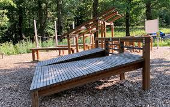
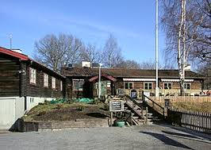

Aktiviteter
Fågelskådning
Nacka naturreservat är känt för sin biologiska mångfald. Detta lockar fågelskådare från hela världen. Mer om vilka arter som finns hittar du här.
Utegym
Din kropp tar upp mer syre i frisk natur. Utnyttja detta och släng in ett träningspass!
Vandringsleder

Våra vandringsleder bjuder på natur och avkoppling. Dessa spår passar alla. Från barnfamiljen till löparen.
Hellasgården
På Hellasgården vid Källtorpssjön finns bastu, servering, bad och många aktiviteter både sommar och vinter. Till exempel minigolf, skridskor, isvaksbad med mera.
Se mer på hemsidan här.
Björkhagens Golfklubb

Spela golf i Nackareservatet på Björkhagens Golfklubb.
Se mer på hemsidan här.